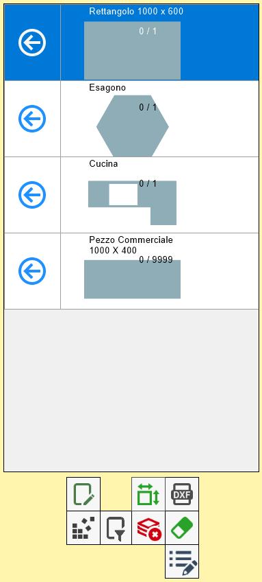
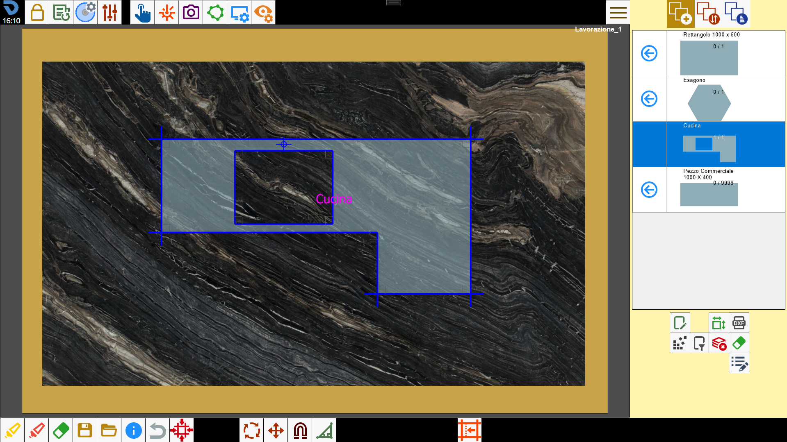
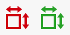

Quando uno o più pezzi vengono creati e importati su Parametrix, il programma li aggiunge alla lista dei pezzi, collocata sulla sezione destra della schermata principale.
Attraverso la lista dei pezzi, l’operatore può:
Inserire i pezzi sull’area di lavoro;
Tenere traccia dei pezzi lavorati e di quelli ancora da lavorare;
Applicare alcune modifiche ai pezzi.

Elementi della lista
Ogni riga della lista rappresenta un pezzo che è stato importato in Parametrix.

Come si può vedere in questa immagine, in una riga sono contenute le seguenti informazioni relative al pezzo:
Anteprima della forma | Rappresentazione semplificata della geometria del pezzo. |
Marca del pezzo | Etichetta che viene aggiunta al pezzo per identificarlo. |
Numero dei pezzi inseriti e totali | Indica il numero dei pezzi di quella riga che sono stati inseriti all’interno dell'area di lavoro, ed il numero totale di pezzi di quel tipo che è possibile inserire. |
Inserire i pezzi nell’area di lavoro
Per inserire i pezzi nell’area di lavoro si utilizza il seguente pulsante che si trova in ogni riga della lista:
Inserisci pezzi nell’area di lavoro |
Il pezzo selezionato è stato posizionato sull’area di lavoro, ed il numero dei pezzi di questa riga inseriti è stato aggiornato.

Una volta raggiunto il numero massimo, il pulsante “Inserisci pezzi“ di quella riga scompare, in quanto tutti i pezzi di quella riga sono stati lavorati.
Operazioni sui pezzi della lista
I pulsanti sottostanti alla lista permettono di gestire gli elementi della lista. In particolare:
 | Pulisci lista dei pezzi |
 | Nascondi/Mostra pezzi commerciali |
Cancella pezzo | |
 | Filtra/Ordina i pezzi |
 | Proprietà aggiuntive del pezzo |
Cancella pezzo
Questa funzione permette di eliminare i pezzi dalla lista singolarmente. Dopo aver premuto il pulsante, il programma chiederà all’utente di selezionare la riga da cancellare sostituendo la freccia di inserimento dei pezzi sull’area di lavoro con una gomma.

Premendo questo pulsante, viene eliminata la riga corrispondente, e quindi tutti i pezzi che rappresenta.